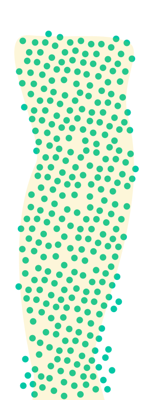
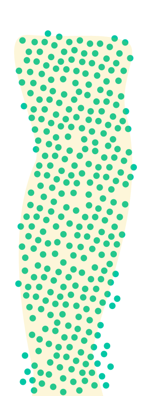
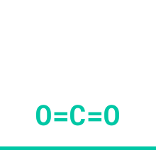
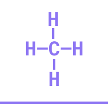
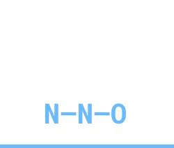
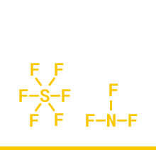

Greenhouse gases, most importantly Carbon dioxide (CO₂), Methane (CH₄), Laughing gas (N₂0) and F-Gases (PFC, NF3, SF6), are gases in the Earth's atmosphere that are responsible for global warming. To masure the climate impact, or more precisely the climate damage of these greenhouse gases, gases can be converted into CO₂ equivalents (CO₂eq).
CO₂
CH₄
N₂0
PFC, NF4, SF4
In order to make the effects of the various greenhouse gases on the climate comparable, the United Nations Intergovernmental Panel on Climate Change (IPCC) has defined the so-called Global Warming Potential (GWP). The GWP expresses the warming effect of a certain amount of the respective greenhouse gas over a defined period of time (100 years) compared to that of CO₂.
The climate impact of carbon dioxide serves as a benchmark, while the other greenhouse gases are related to each other according to their specific effectiveness in particles per million particles (part per million, ppm) of CO₂.
1 CO₂eq
28 CO₂eq
298 CO₂eq
12400-23500 CO₂eq
 

The GWP values of the regulated F-gases used as refrigerants range up to a GWP of 12,200 for HFC-116, which is part of a refrigerant mixture. The highest GWP (22,800) of all F-gases is sulphur hexafluoride (SF6), which is not a refrigerant. Most of the F-Gases have to phase down because of their high GWP. The goal is to cut the EU’s F-Gas emission by two-thirds by 2030 compared to 2014 levels.
Globally, the share of all fluorinated greenhouse gases - including those not used as refrigerants - in total emissions of climate-damaging gases is currently around one to two percent. That seems little at first glance. However, forecasts show that this share could rise to six to eight percent in 2050 if no countermeasures are taken. Between 1990 and 2016 alone, F-gas emissions in Germany rose by a total of 14 percent to 15.3 million tonnes of CO2 equivalents.
One of the disadvantages of these so-called HFOs or unsaturated fluorinated refrigerants, which are already measured in the atmosphere in ever higher concentrations, are fluorinated degradation products. Of particular concern here is the persistent trifluoroacetic acid, which is already detectable everywhere in the environment and cannot be removed by the usual methods of drinking water purification.
As already mentioned, the GWP expresses the warming effect of a certain amount of the respective greenhouse gas over a defined period of time (100 years) compared to that of CO₂. But apart from that, all gases are remaining in the atmosphere for different amounts of time, from months to millennia, and affect the climate on very different timescales.
While the CO₂-equivalents show how important it is, to know the different climate impacts of the greenhouse gases, it is also good to know how much every greenhouse gase takes part in the whole.

Carbon dioxide is a colourless and odourless gas. This is because it is at such a low concentration that we are accustomed to it; but if you were to increase the amount of CO2 available in the air, you would notice a sharp acidic smell and taste. CO2 is also colourless, but pure is heavier than air so if you had a leak from a CO2 gas bottle, the gas would rest at floor level if it is undisturbed. It is well soluble in water and a natural component of air, as well as a natural by- product of the cellular respiration of many living creatures. The dwell time in the atmosphere is varying up to 1000 years. Interesting fact: During eruptions of volcanoes, a lot of CO2 is released (resulting volcanic gases).

Methane is a colourless, odourless and combistible gas. It is insoluble in water and forms explosive mixtures with air. One assumes: Main component of the earthly primeval atmosphere. The average lifetime in the atmosphere is around 12.4 years, much shorter than that of CO2. One assumes, that it was the main component of the earthly primeval atmosphere. It is mostly produced when organic matter rots in the absence of air in swamps or in sediment at the bottom of water bodies.

Nitrous oxide, also known as laughing gas, is odourless, colourless and tasteless, although there are descriptions that describe a slightly sweet taste. With a density of 1.97 kg/m³, nitrous oxide is 1.5 times heavier than air, which means that it is not distributed homogeneously in a room, but tends to "fall" to the ground. Laughing gas is not combustible, but can oxidise other substances. It therefore has a fire- promoting effect. Laughing gas is highly soluble in cold water; under increased pressure, laughing gas shows very good solubility in fats.

The term "F-gases" stands for fluorinated greenhouse gases and is a collective term for partly fluorinated hydrocarbons (HFC), perfluorinated hydrocarbon (PFC), sulphur hexafluoride (SF6) and nitrogen trifluoride (NF3). Since 2014 there is a EU Regulation concerning fluorinated greenhouse gases which will help to reduce emission levels by gradual phasing-down available HFC quantities and expansing regulations on leak tests, certifications, disposal and labelling.


Carbon dioxide is largely produced by the burning of fossil fuels such as coal, oil and gas, for example for power generation, in industry, domestic heating systems and in road traffic. In addition, as a result of deforestation, CO2 is released by the decomposition of biomass during the burning of mainly tropical forests. Lignite-fired power plants emit about 20 percent of the total German CO2 emissions.
Methane is always produced when organic material is decomposed in the absence of oxygen; this occurs mainly in the stomachs of ruminants (cows and sheep), in wet rice cultivation and in landfills. For example, a cow produces about 150 to 250 litres of methane.
Laughing gas is produced in the soil during the decomposition of mineral nitrogen fertilizers. It is the most important greenhouse gas released by agriculture worldwide. The use of land and fertilizers leads to a significant release of CO2 and nitrous oxide.
F-Gases are mainly used as propellants and refrigerants, their use has been greatly reduced since 1990 as they contribute to the destruction of the ozone layer; the fluorocarbons (HFCs) used as substitutes do not damage the ozone layer - but they are also greenhouse gases.
To have a better understanding of what numbers of emmission different countries have and more important, what stories are behind the numbers, we selected a few to show the anthropogenic Greenhouse Gases in context.
in megatons CO2eq, 2016
From the first view, you would think that China emits way more emissions that Germany. But there is always more than one perspective on numbers like these. One option is to distribute the emissions to capita.